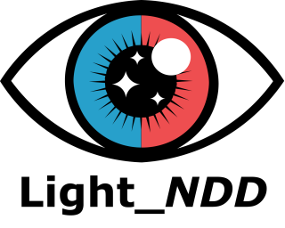

Participant thank-you voucher €180 for completing the study
You may be eligible to take part if you meet the following criteria:
Who may not be eligible?
There are a few additional eligibility criteria to ensure that the study is safe and suitable for you, and that the measurements are valid and reliable.
Please read the full criteria below, and contact the study team if you have questions. You don't need to share private details.
Participation is voluntary, and you can withdraw at any time without giving a reason. Your data will be kept confidential.
This study received ethical approval from Maynooth University Research Ethics committee XXXXXX.
Further information about the study is provided in the Participant Information Sheet, which you will receive before deciding whether to take part. You can also view or download the PDF version below.
Taking part in the Light_NDD study involves: online questionnaires (about 1 hour 30 minutes in total), two weeks of wearing sensors, an evening visit to the lab (about 1 hour), and a thank-you voucher for completing all of them.
Here is what to expect, step by step.
Contact the Study Team to ask questions or register your interest. light.ndd@mu.ie
We'll email you the Participant Information Sheet so you can learn more about what the study involves.
If you would like to take part, you'll give your informed consent before continuing.
Questions about your demographics, lifestyle, neurodevelopmental profile, and autistic and ADHD traits.
You'll wear a wrist actiwatch and a light sensor around your neck as part of your normal daily routine.
Questionnaires about light, sleep, chronotype and mood.
We’ll measure your pupil responses to light stimuli, then ask you to complete a short final questionnaire about your experience.
We’ll offer you transport home (taxi or public transport), or a friend or family member can pick you up and join you in the lab if you prefer.
Once you’ve completed all the steps above, you’ll receive a €180 voucher and a graphical summary of your wearable data.
Contact the Study Team (Jessica, Harry, Giulia) to ask questions or register your interest.
Access or sensory needs can be accommodated.
We look forward to hearing from you!
Contact the Study Team: light.ndd@mu.ie